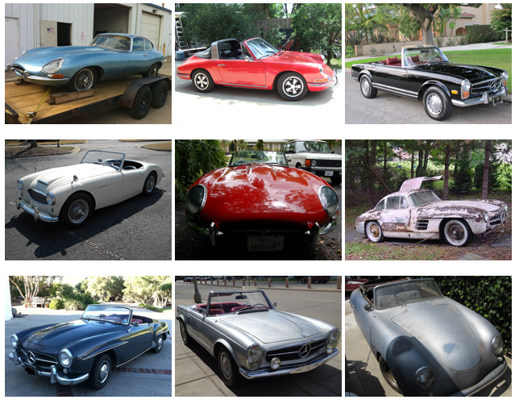

NEXT GENERATION AUTOMOBILES
CLASSIC AUTOMOBILES
According to Wikipedia, a car or an automobile is defined as a wheeled motor vehicle used for transportation. The word “Automobile” is derived from a Greek word “Autos” meaning self and a Latin word “mobilis” meaning “movable”.
A classic car is an older automobile, typically 20 years or older, though definitions vary. The common theme is of an older car of sufficient historical interest to be collectable and worth preserving or restoring rather than scrapping.
Today we are going to look at highbreed vehicles with designs from classic cars tuned with the latest development and technology of this modern era.
1.Car-to-Car Communication As cars get their own Internet connection, They will communicate to tell what the flow of traffic is like. This will also help prevent crashes by allowing vehicles to alert one another.
2.3D Gestures Instead of touchscreens, joysticks and buttons, We will control parts of our car by waving our hands.
3.Biometric Scanners Biometric sensors can monitor heart-rate and breath rate for the driver in order to alert them of emergency or medical issues.
4.Energizing Comfort This combines a bunch of the car’s functions to enhance passenger “wellness.” The system adjusts the car’s climate control, seat heating/cooling/ ambient lighting and the built-in fragrance.
5.Self-Driven Cars This also a big feature of next generation where cars use inbuilt GPS and other navigation systems to self drive.
All rights reserved @2020